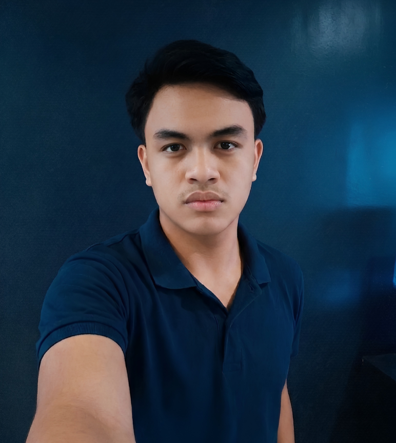
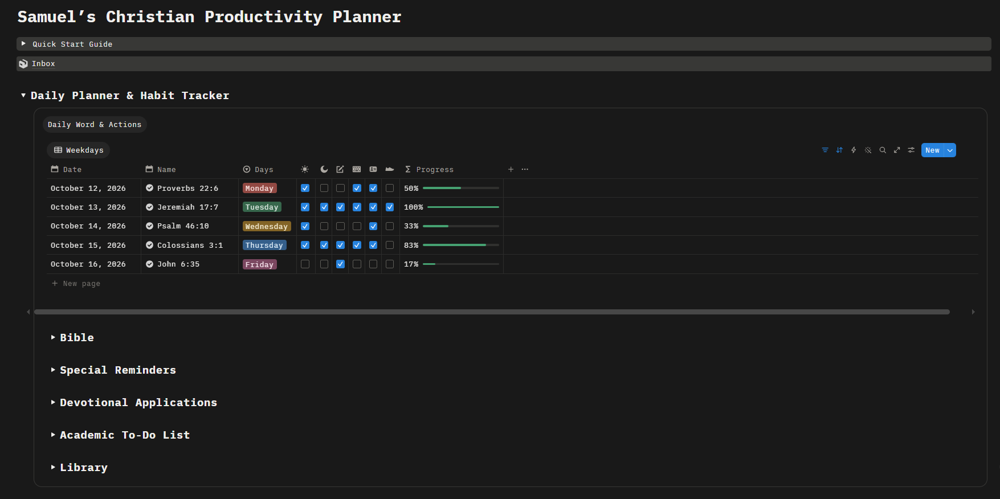
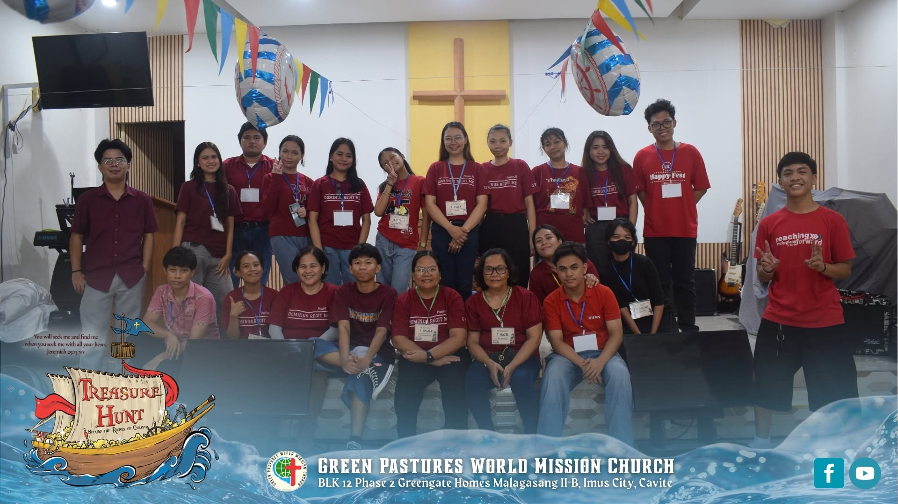
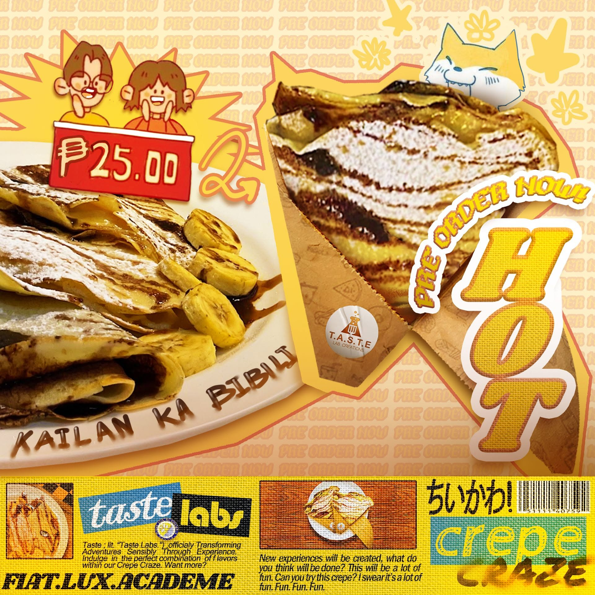

"The Lord is my shepherd; I shall not want. He makes me lie down in green pastures. He leads me beside still waters."
About Me

Yeshua Samuel Y. Quiban
I am Yeshua Samuel, a Bachelor of Arts in Multimedia student from the University of the Philippines - Open University!
Passionate for artistic ventures and musical expression, I am currently a Christian Worship Leader and a Media Creative Member of Green Pastures World Mission Church.
Being an iskolar, I want to serve the people, so I also volunteer at UPOU University Student Council and Ugnayan ng Pahinungód UPOU.
Most Relevant & Recent Project for Each:
Student Orientation : PubMat Committee Head and Student Handbook Researcher & Writer
Foundation Series : Publicity Team Lead for the English, Physics, and Math Bridging program
In the future, I aspire to be a researcher for Virtual and Augmented Reality technologies or a project manager for a creative or human resource organization.
Things I Love
🎧 Music: Christian Praise & Worship Songs, Film Soundtracks
🎬 Movies: Romantic Comedies & Science Fiction
🏃 Wellness: Jogging Most of the Time
Passion Projects
Notion: Christian Productivity Planner

Notion Second-Brain System & Productivity Planner
During my freshman year here in UPOU, I made this personal second-brain
productivity system built in Notion for task & knowledge management
of my academic and extracurricular commitments and for habit tracking,
daily planning, and journaling or devotion. (September 2026)
Privacy: 3D Exhibition
3D Digital Privacy Exhibition
In this group interactive three-dimensional exhibition, I discussed about
digital privacy and its definition, categories, issues, and proactive guides
to protect one's personal information and security (April 2026).
Daily Vacation Bible School (DVBS) 2026

Daily Vacation Bible School (DVBS) 2026
Throughout the four-day event, I spearheaded the media creatives by disseminating
tasks throughout all members, organizing photographs and video recordings, and
edited them for posting through our church social media page (27-30 May 2026) .
Taste Lab Creations Inc.

Taste Lab Creations Inc.
Together with a team of members, we managed to create a mini business plan on
chocolate crepes and sell it to our fellow classmates. I was the general manager
who oversaw the whole operation (18-20 Feb 2026).